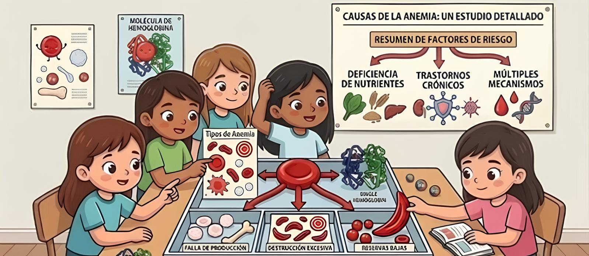

Fe
Deficiencia de hierro
Es la mas comun. El cuerpo no tiene suficiente hierro para fabricar hemoglobina, la proteina que transporta oxigeno.
- Frecuente en ninos, adolescentes y gestantes
- Puede mejorar con dieta y tratamiento indicado
Idea clave
Es una condicion que puede aparecer por falta de nutrientes, perdida de sangre, enfermedades hereditarias o problemas en la produccion de celulas sanguineas. Por eso no se debe tratar de la misma manera en todos los casos.

Es la mas comun. El cuerpo no tiene suficiente hierro para fabricar hemoglobina, la proteina que transporta oxigeno.
Aparece cuando falta vitamina B12 o acido folico. Estas vitaminas ayudan a formar globulos rojos sanos.
Es hereditaria. Los globulos rojos tienen una forma anormal y pueden durar menos tiempo en la sangre.
La medula osea produce pocas celulas sanguineas. Es menos comun, pero requiere atencion especializada.
La anemia por falta de hierro es la mas frecuente, pero no es la unica. Por eso el diagnostico medico es necesario para conocer la causa y elegir el tratamiento correcto.